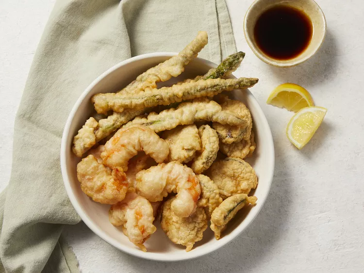

Tempura Batter

Description
The recipe is very good 10/10
Ingredients
-
2 egg whites
-
1 cup all-purpose flour
-
2/3 cup cold water
Steps
-
Gather all ingredients.
-
Beat egg whites in a bowl until frothy.
-
Fold flour and cold water into egg whites until the batter is barely mixed.
-
Coat vegetables or meat with cornstarch, then dip into the tempura batter and fry in hot oil until golden brown and crispy.